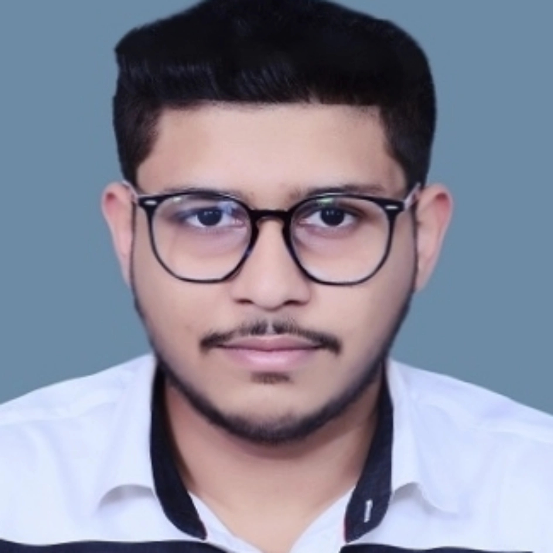

VISHAL VERMA

B.Tech. - ECE
Ph: +91-8218553451
Email: vverma1a1@gmail.com
Modinagar - 201204, Uttar Pradesh, INDIA
Education
Inderprastha Engineering College
B.Tech- ECE
Aggregate%: 75.02 / 100.00
St.Teresa's Aademy
12th CISCE
Percentage: 86.00 / 100.00
St.Teresa's Aademy
10th CISCE
Percentage: 88.33 / 100.00
Internships
NORTHEN INDIAN RAILWAYS
Duration : June 7,2019 - Aug 3,2019
Key Skills:
Interpersonal Skills ,Teamwork ,Time Management ,Decision-Making ,Project Management Skills ,Project Coordination ,Surveillance CCTV ,Patience